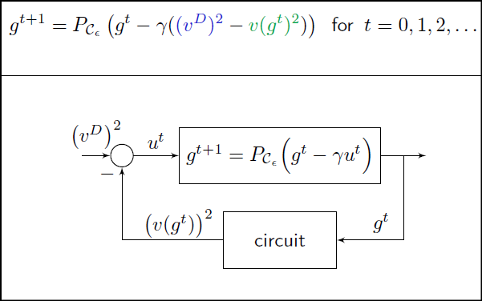
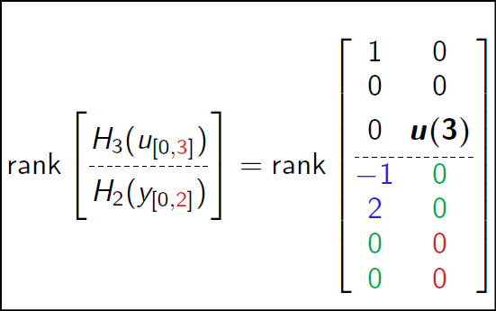
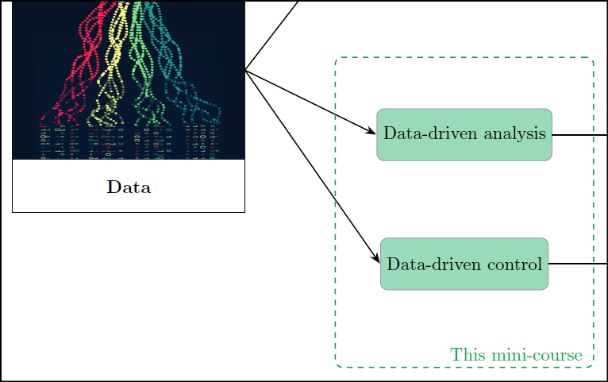
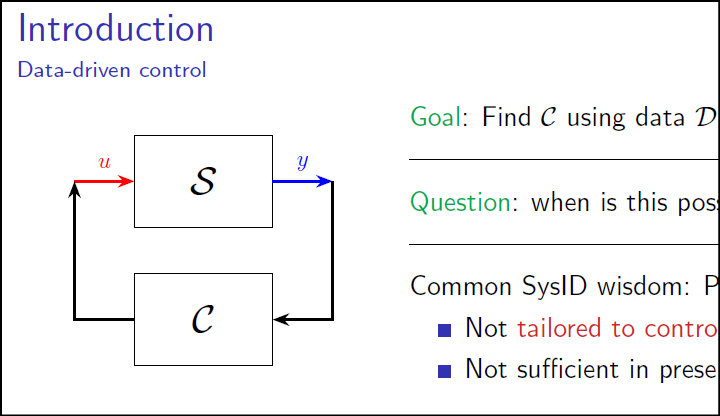
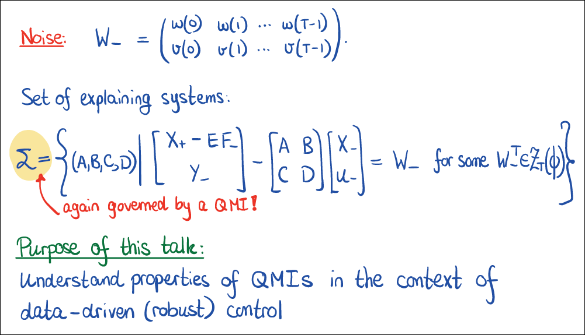
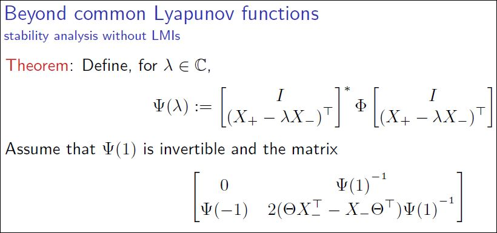

Presentations and talks
SCO Colloquium (University of Groningen, Netherlands)
|  | Energy-based learning in resistive circuits |
5-day GIAN course 2025 (IIT Mandi, India)
 |
Data-based systems and control theory |
IEEE Conference on Decision and Control 2024 (Milan, Italy)
|  | The shortest experiment for linear system identification |
Benelux meeting on Systems and Control 2024 (Blankenberge, Belgium)
|  | Mini-course on data-driven control |
SIAM Conference on Computational Science and Engineering 2023 (Amsterdam, Netherlands)
|  | Learning Stabilizing and Optimal Controllers from Data: An Informativity Approach |
IEEE Conference on Decision and Control 2022 (Cancún, Mexico)
|  | On quadratic matrix inequalities for data-driven control |
 |
The informativity approach to data-driven analysis and control |
|  | Data-based analysis and design beyond common Lyapunov functions |